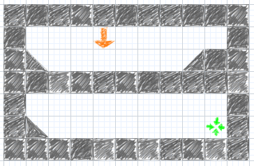

Creating Levels for Rabbit Escape
Creating Levels for Rabbit Escape< < <Back to the Rabbit Escape main page
Watch this video for a quick introduction to how to create levels using the Rabbit Escape Level Editor.
Make sure you have Rabbit Escape downloaded and working before you start.
The Rabbit Escape .jar file you downloaded is really a zip file, and the levels are simple text files inside it.
We are going to extract a level from it, change it, and then put it back. Once you've done this, your new level will appear instead of the one you extracted.
Here are the steps you need to follow:
Add your levels to the Rabbit Escape Levels forum. If you say we can, we will include our favourites in the next version of the game!
Rabbit Escape level files are little text files where we've tried to draw the level using letters and symbols. (This is sometimes called "ASCII Art".)
Here is an example of a level file. On the right you can see how it looks in the game:
:name=Digging practice :num_rabbits=3 :num_to_save=1 :dig=5 ########### # Q # #\ /## ########### # # #\ O# ###########
The most important symbols to use are:
At the top of the file are some properties you can set, using lines starting with ":". These are all optional, but here is what you are allowed add:
The game is very picky about the format of level files.
Make sure every line (except ones starting with ":") is exactly the same length. It's best to use a fixed-width font in your text editor to help with this. Try "Courier New" or "Ubuntu Mono".
Make sure no lines have extra spaces at the end.
It's best to run the game from a Terminal or Cmd window, using "java -jar rabbit-escape-*.jar" so that you can see any error messages that come up when your level file isn't quite right.
Contact me on rabbitescape@artificialworlds.net if you need any help, and send in your levels by adding them to the Rabbit Escape Levels forum